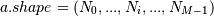
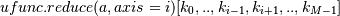
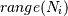
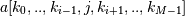

numpy.ufunc.reduce¶
- ufunc.reduce(a, axis=0, dtype=None, out=None, keepdims=False)¶
Reduces a‘s dimension by one, by applying ufunc along one axis.
Let . Then  = the result of iterating j over , cumulatively applying ufunc to each . For a one-dimensional array, reduce produces results equivalent to:
r = op.identity # op = ufunc for i in range(len(A)): r = op(r, A[i]) return r
For example, add.reduce() is equivalent to sum().
Parameters : a : array_like
The array to act on.
axis : None or int or tuple of ints, optional
Axis or axes along which a reduction is performed. The default (axis = 0) is perform a reduction over the first dimension of the input array. axis may be negative, in which case it counts from the last to the first axis.
New in version 1.7.0.
If this is None, a reduction is performed over all the axes. If this is a tuple of ints, a reduction is performed on multiple axes, instead of a single axis or all the axes as before.
For operations which are either not commutative or not associative, doing a reduction over multiple axes is not well-defined. The ufuncs do not currently raise an exception in this case, but will likely do so in the future.
dtype : data-type code, optional
The type used to represent the intermediate results. Defaults to the data-type of the output array if this is provided, or the data-type of the input array if no output array is provided.
out : ndarray, optional
A location into which the result is stored. If not provided, a freshly-allocated array is returned.
keepdims : bool, optional
If this is set to True, the axes which are reduced are left in the result as dimensions with size one. With this option, the result will broadcast correctly against the original arr.
Returns : r : ndarray
The reduced array. If out was supplied, r is a reference to it.
Examples
>>> np.multiply.reduce([2,3,5]) 30
A multi-dimensional array example:
>>> X = np.arange(8).reshape((2,2,2)) >>> X array([[[0, 1], [2, 3]], [[4, 5], [6, 7]]]) >>> np.add.reduce(X, 0) array([[ 4, 6], [ 8, 10]]) >>> np.add.reduce(X) # confirm: default axis value is 0 array([[ 4, 6], [ 8, 10]]) >>> np.add.reduce(X, 1) array([[ 2, 4], [10, 12]]) >>> np.add.reduce(X, 2) array([[ 1, 5], [ 9, 13]])